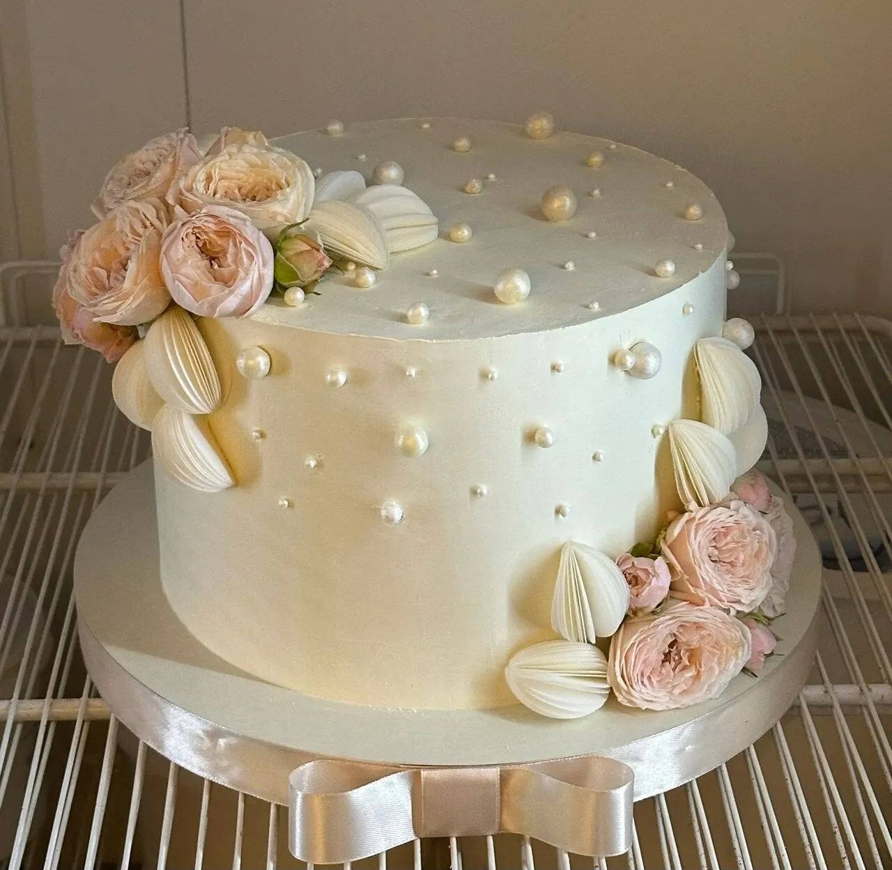
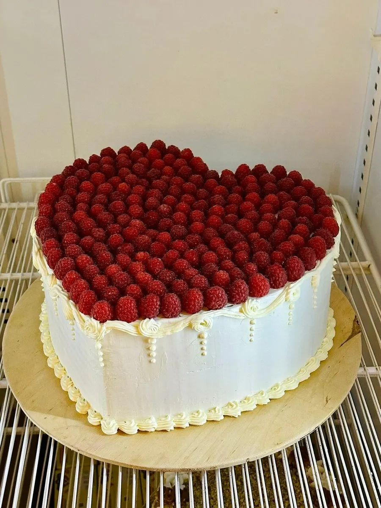
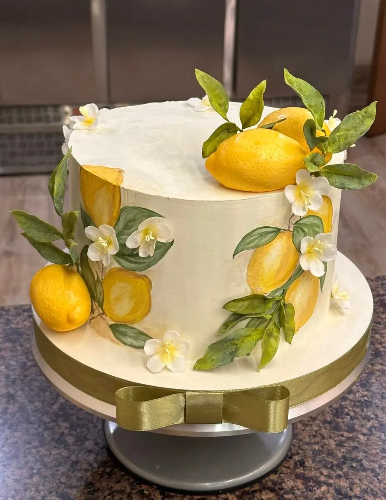
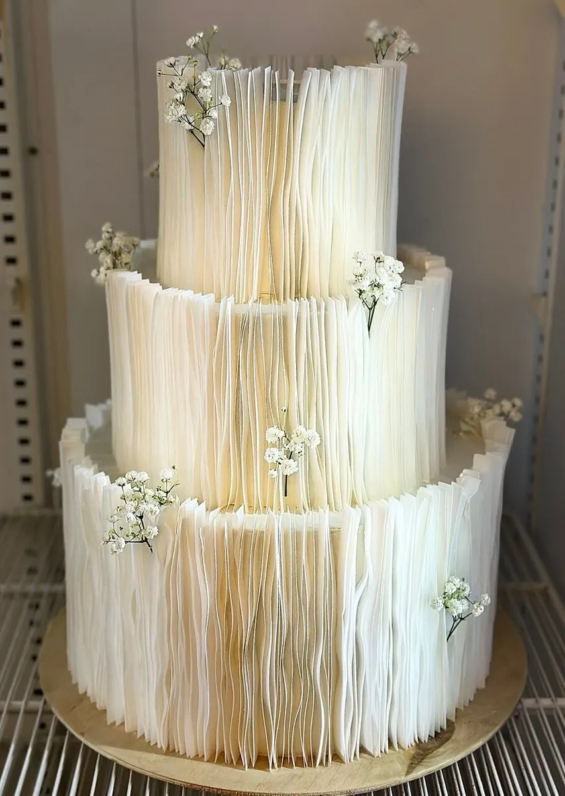

Кондитерская и кофейня на Ворошилова
Торты, десерты и выпечка на заказ в Липецке
Кондитерская-кофейня на улице Ворошилова: торты на любой повод, пирожные, круассаны и свежая выпечка. Можно попробовать на месте или заказать.

- 5,0 на Яндекс.Картах, 374 оценки
- Торты, десерты и выпечка
- Открыто ежедневно с 9:00 до 20:30
Что у нас можно купить
Цену торта называем при заказе: она зависит от размера и украшений.
Торты и десерты
- Торт на заказна праздник, свадьбу, детский день рожденияуточнить
- Торты из витрины«Красный бархат», «Сникерс», малиновыйуточнить
- Пирожныеуточнить
- Меренговый рулетуточнить
Выпечка и кофе
- Круассаныуточнить
- Сочникуточнить
- Восточные сладостиуточнить
- Кофе с собойуточнить
Как заказать торт
- 01
Повод и дата
Напишите в WhatsApp или позвоните: скажите, к какому дню нужен торт.
- 02
Размер и оформление
Расскажите про вкус, надпись и украшения, пришлите пример.
- 03
Заберите в кондитерской
В назначенный день торт ждёт вас на улице Ворошилова, 3.



Что пишут клиенты
Торты на любой день
«Заказываем как на праздники, так и порадовать себя кусочком вкусного торта в обычный день», пишет buravlevski.
Можно попробовать
«Большое разнообразие десертов, тортов, можно и попробовать и заказать», пишет Наталья К.
Круассаны
«Самые вкусные круассаны!», пишет Саша Минаева.
Кофе и персонал
«Добродушный персонал. Вкусный кофе, выпечка», пишет Мария К.
Отзывы с Яндекс.Карт
«Самые вкусные десерты и торты в городе. Добродушный персонал. Вкусный кофе, выпечка.»
Мария К. · 4 августа 2025
«Отличное кафе-кондитерская! Всегда свежая, разнообразная и вкусная выпечка, прекрасный персонал!»
Виктор Логачев · 19 января
«Уютное кафе, люблю это место, очень вкусные торты, есть ещё разная выпечка, большой выбор чая»
Татьяна М. · 11 мая 2025
Отзывы с карточки на Яндекс.Картах, без правок.
Контакты
- Адрес
- улица имени К.Е. Ворошилова, 3, Липецк
- Часы
- ежедневно, с 9:00 до 20:30
- Телефон
- +7 (903) 643-89-30